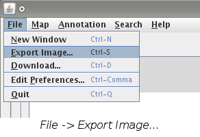
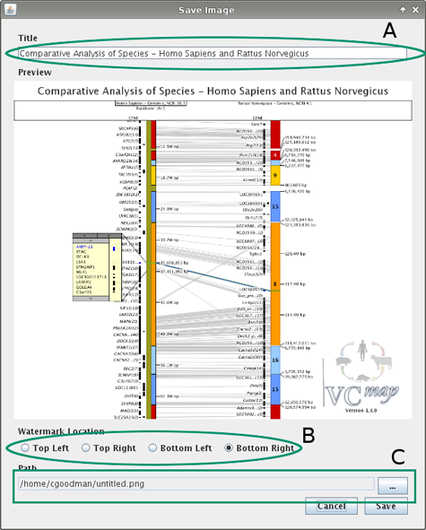
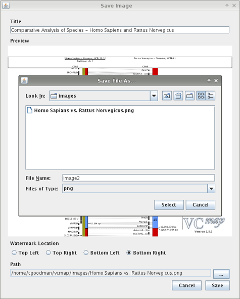

Loading Custom Annotation from GFF Files
Exporting an image can only be done what at least one map is loaded. If you need to load a map,
consult the Load a Map page for help on doing this. When a map
is loaded the Export Image feature allows you to save the contents of the map window to an image file.
How to Save an Image
- Begin by selecting "File -> Export Image..." from the menu bar or by
pressing "CTRL + S" on the keyboard.

- A "Save Image" dialog box will open up. This dialog contains several different parts.

- The title text field, shown above in selection A allows you to give the image a title. The title
on the image is automatically is resized to fit.
- The watermark location radio buttons, shown in selection B above, allow you to choose where on the image
to place the VCMap logo.
- Selection C in the image above shows the path where the image will be saved. Clicking on the path or the
"..." button opens up a "Save File As..." dialog box shown below.

- The drop down menu at the bottom of the dialog contains a list of all the files that can be written to. When the
select button is chosen the file path will be updated to the new directory with the new file name.
Additional Information
- Titles default to: "Comparative Analysis of Species - ..." where ... is a list of all the open maps.
- Previously used titles can be recalled by beginning to re-type the title or pressing down on an empty title box.
This will bring up a popup menu with a list of previously used titles.
- Invalid file names are not allowed by the "Save File As..." dialog.